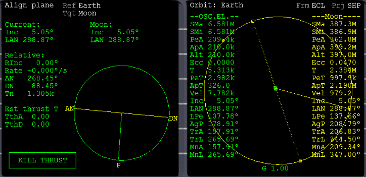
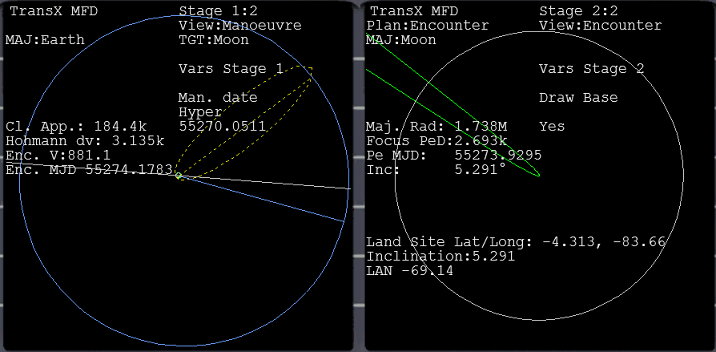
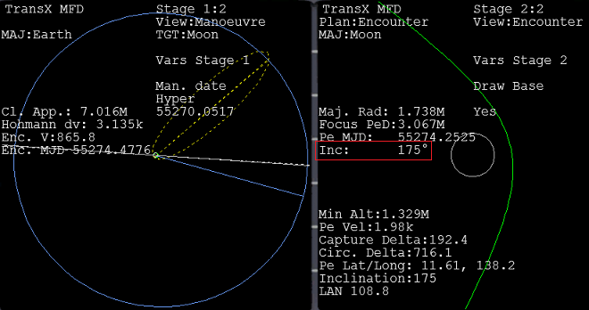
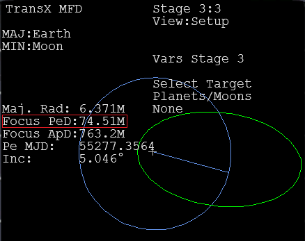
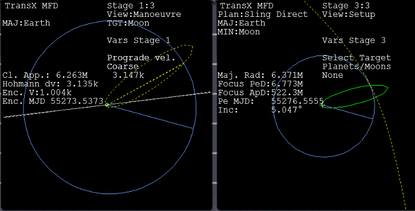

TransX 地球―月の自由帰還軌道を作る
TransXを使って、地球―月の自由帰還軌道を作る方法について解説します。
今回解説する自由帰還軌道とは、このような軌道です。
- 地球を離れて月に向かう。
- 月で減速スイングバイをして、地球に落ちる軌道にする。
- 地球に戻る。
TransXを使えば、このような軌道も手軽に作成できます。
打ち上げ・軌道投入
今回使用するシナリオは、ChecklistsフォルダのQuickstartです。
以下の記事を参考に、月と軌道面が一致するように軌道投入してください。
チュートリアル Part9 月への打ち上げ
ただし、今回は月面基地に降りるわけではないので、月の裏側が明るくなるタイミングで出発してください。

マニューバを作成する
まず最初に、普通に月に行くときと同じようにマニューバを作成してください。
基地には降りないので、月を直撃するコースで問題ありません。
Part10 TransXで地球軌道から月へ(TLI)

減速スイングバイ
今回は、月で減速スイングバイを実行します。
スイングバイをおこなう天体の進行方向から見て、後ろを通過すると加速。
前を通過すると減速します。
軌道傾斜角が0°（ゼロ）に近ければ、宇宙船は半時計まわりに軌道を周回します。
スイングバイのため天体の近くを通過する場合は、後ろを通ることになります。
軌道傾斜角が180°に近ければ、天体の前を通過します。
したがって、今回のフライトでは「軌道傾斜角が180°に近くなるように、月の近くを通る」ということになります。
自由帰還軌道を作る
Man. dateを操作して、Inc（軌道傾斜角）が180に近く、月のそばを通るような軌道にする。

Stage2でView:Setupに切り替える。
Select TargetでEscapeを選択。
FWDをクリックして、Stage3にする。

Focus PeDの数字が、地球に戻ってきたときの地球の中心からの距離になる。
地球の半径は6.371Mメートル（6,371km）なので、例えば高度400kmなら6.771Mになる。
Stage1のView:ManoeuvreでMan. dateとPrograde vel.を操作して、高度を変える。
何度かStage2に戻って、月面からの距離を確認する。

マニューバが作成できたら、通常通り実行します。
Stage3を見て確認しながら、手動で微調整します。
成功すれば、月の前方を通って、地球に自動的に戻ってくる軌道になるはずです。